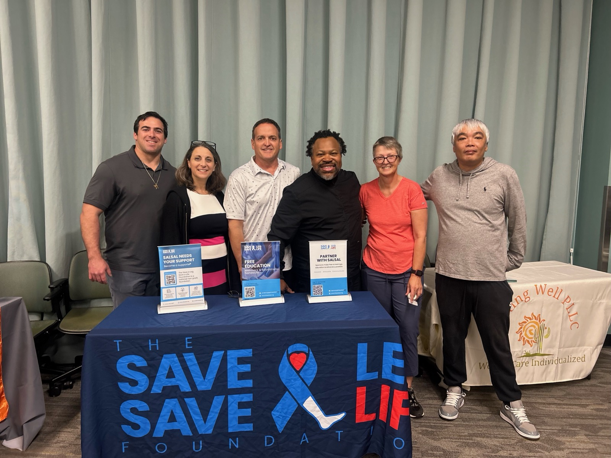
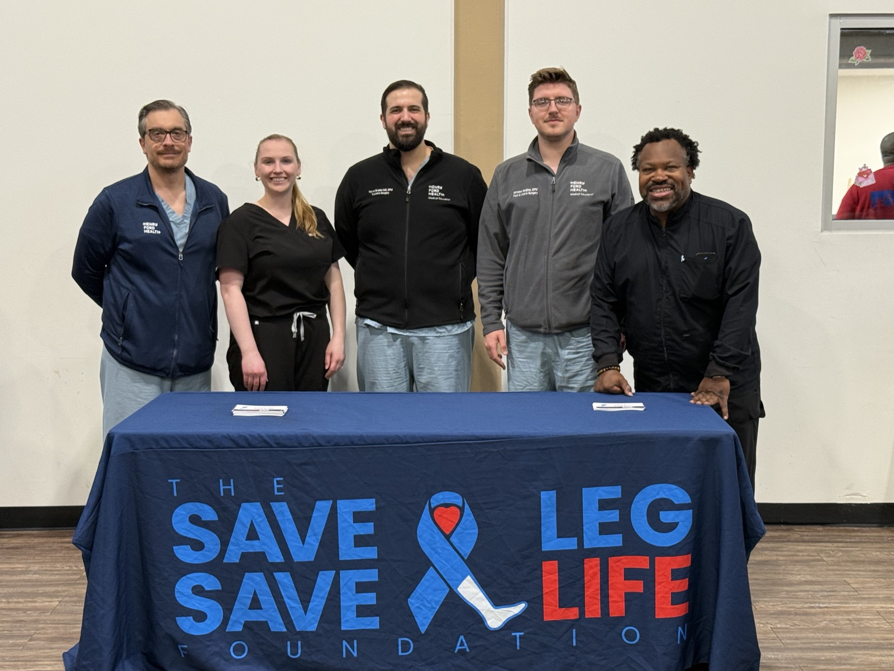
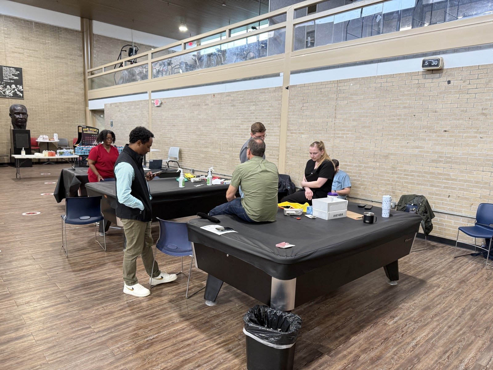
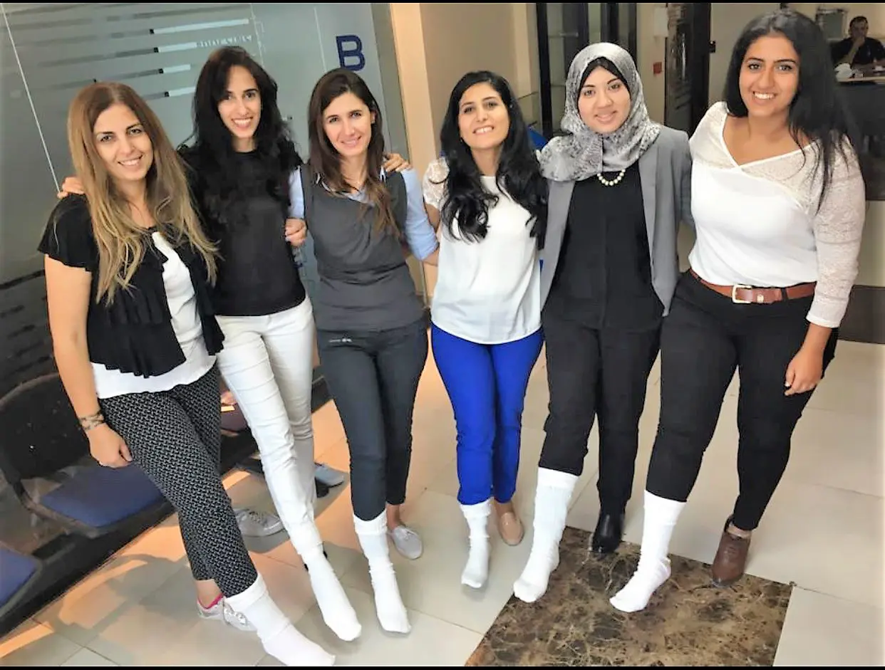
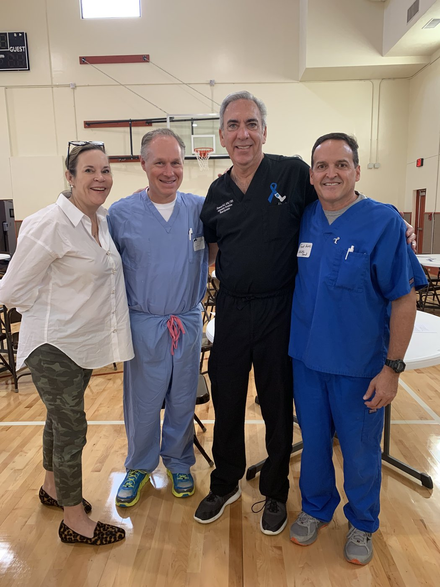

Prevention needs people, not just funding.
Whether you have five minutes or a clinical license, there is a way to help us reach the next community before the next amputation.

Houston · Saturday, September 26
9 AM to 2 PM at the Fifth Ward Multi-Service Center. A free foot and limb-preservation screening, open to everyone.
You don't need a medical degree to save a limb.
Whatever you can give, five minutes or a clinical license, there is a place for you here.

Volunteer at an event
Welcome attendees, guide them through a screening, and be a friendly face on a day that changes lives.
Sign up to volunteer ›
Host a screening
Bring free limb screenings to your city, senior center, or clinic. If you know a community that needs us, start here.
Bring one to your city ›
Spread the word
Take the White Sock pledge and share our resources with everyone in your life living with diabetes or PAD.
Take the pledge ›
Lend your clinical skills
Clinicians and students: join a screening team or help teach. The right eyes, in the right place, change outcomes.
Get involved as a clinician ›Register for the Houston screening
Saturday, September 26, 2026 · 9 AM to 2 PM
Fifth Ward Multi-Service Center, Houston, TX
Organizations can do even more
Corporate partners and sponsors fund the screenings, resources, and provider education that catch what an amputation would have cost.
Ready when you are.
Tell us how you would like to help and we will point you to the nearest opportunity.